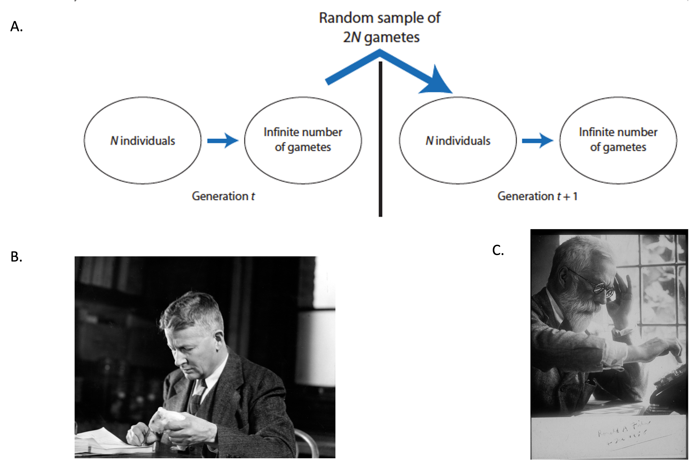
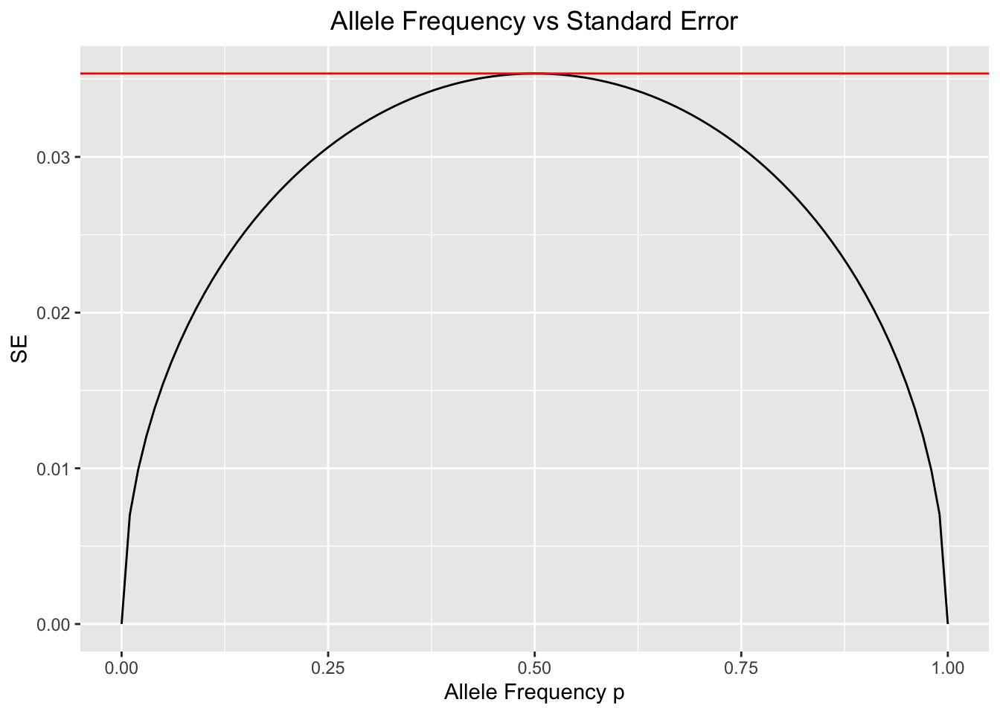
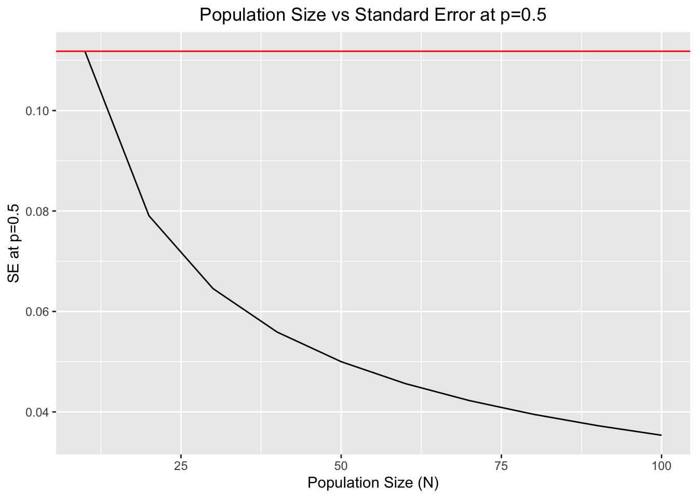

Last updated: 2022-03-17
Checks: 6 1
Knit directory:
~/Documents/Winter_Quarter_2022/Fundamentals/jaurbanChicago.github.io/bin/
This reproducible R Markdown analysis was created with workflowr (version 1.7.0). The Checks tab describes the reproducibility checks that were applied when the results were created. The Past versions tab lists the development history.
The R Markdown file has unstaged changes. To know which version of
the R Markdown file created these results, you’ll want to first commit
it to the Git repo. If you’re still working on the analysis, you can
ignore this warning. When you’re finished, you can run
wflow_publish to commit the R Markdown file and build the
HTML.
Great job! The global environment was empty. Objects defined in the global environment can affect the analysis in your R Markdown file in unknown ways. For reproduciblity it’s best to always run the code in an empty environment.
The command set.seed(12345) was run prior to running the
code in the R Markdown file. Setting a seed ensures that any results
that rely on randomness, e.g. subsampling or permutations, are
reproducible.
Great job! Recording the operating system, R version, and package versions is critical for reproducibility.
Nice! There were no cached chunks for this analysis, so you can be confident that you successfully produced the results during this run.
Great job! Using relative paths to the files within your workflowr project makes it easier to run your code on other machines.
Great! You are using Git for version control. Tracking code development and connecting the code version to the results is critical for reproducibility.
The results in this page were generated with repository version dfec2ff. See the Past versions tab to see a history of the changes made to the R Markdown and HTML files.
Note that you need to be careful to ensure that all relevant files for
the analysis have been committed to Git prior to generating the results
(you can use wflow_publish or
wflow_git_commit). workflowr only checks the R Markdown
file, but you know if there are other scripts or data files that it
depends on. Below is the status of the Git repository when the results
were generated:
Untracked files:
Untracked: .DS_Store
Untracked: .Rhistory
Unstaged changes:
Deleted: New Folder With Items/.DS_Store
Deleted: New Folder With Items/Genetic_Drift_Markov_Chain.Rmd
Deleted: New Folder With Items/_site.yml
Deleted: New Folder With Items/include/footer.html
Modified: bin/Genetic_Drift_Introduction.Rmd
Deleted: index.html
Note that any generated files, e.g. HTML, png, CSS, etc., are not included in this status report because it is ok for generated content to have uncommitted changes.
These are the previous versions of the repository in which changes were
made to the R Markdown (bin/Genetic_Drift_Introduction.Rmd)
and HTML (docs/Genetic_Drift_Introduction.html) files. If
you’ve configured a remote Git repository (see
?wflow_git_remote), click on the hyperlinks in the table
below to view the files as they were in that past version.
| File | Version | Author | Date | Message |
|---|---|---|---|---|
| Rmd | dfec2ff | jaurbanChicago | 2022-03-17 | Corrected intro html and rmd |
| html | dfec2ff | jaurbanChicago | 2022-03-17 | Corrected intro html and rmd |
| Rmd | 06472ac | jaurbanChicago | 2022-03-17 | Added diffusion_process rmd and html |
| html | 06472ac | jaurbanChicago | 2022-03-17 | Added diffusion_process rmd and html |
| Rmd | 7472e3f | jaurbanChicago | 2022-03-17 | Updates both rmd and html |
| html | 7472e3f | jaurbanChicago | 2022-03-17 | Updates both rmd and html |
| Rmd | 0d8c343 | jaurbanChicago | 2022-03-17 | Updates both rmd and html |
| html | 0d8c343 | jaurbanChicago | 2022-03-17 | Updates both rmd and html |
| Rmd | 6ad5355 | jaurbanChicago | 2022-03-17 | Minor updates |
| html | 6ad5355 | jaurbanChicago | 2022-03-17 | Minor updates |
| Rmd | b4aee82 | jaurbanChicago | 2022-03-17 | Updated rmd and html files |
| html | b4aee82 | jaurbanChicago | 2022-03-17 | Updated rmd and html files |
| Rmd | de32f0f | jaurbanChicago | 2022-03-16 | Updated intro rmd and html |
| html | de32f0f | jaurbanChicago | 2022-03-16 | Updated intro rmd and html |
| Rmd | 5ddeea6 | jaurbanChicago | 2022-03-16 | Updated intro rmd and html and added Markov model rmd and html |
| html | 5ddeea6 | jaurbanChicago | 2022-03-16 | Updated intro rmd and html and added Markov model rmd and html |
| Rmd | 560a9f1 | jaurbanChicago | 2022-03-16 | Updated intro rmd and html |
| html | 560a9f1 | jaurbanChicago | 2022-03-16 | Updated intro rmd and html |
| Rmd | 62ed450 | jaurbanChicago | 2022-03-15 | Updated intro rmd and html |
| html | 62ed450 | jaurbanChicago | 2022-03-15 | Updated intro rmd and html |
| Rmd | e705087 | jaurbanChicago | 2022-03-15 | Updated intro rmd and html |
| html | e705087 | jaurbanChicago | 2022-03-15 | Updated intro rmd and html |
| Rmd | 4ba7a11 | jaurbanChicago | 2022-03-14 | Updated intro rmd and html |
| html | 4ba7a11 | jaurbanChicago | 2022-03-14 | Updated intro rmd and html |
| html | aa49b2d | jaurbanChicago | 2022-03-14 | Updated intro html |
| Rmd | 1e475f2 | jaurbanChicago | 2022-03-14 | Updated intro rmd |
| html | 5d7569c | jaurbanChicago | 2022-03-14 | Added Genetic_Drift_Introduction.html |
| Rmd | 7be8910 | jaurbanChicago | 2022-03-14 | Added Genetic_Drift_Introduction.Rmd |
Much population genetic theory concentrates on describing the changes of allele frequencies through time. The two most important factors influencing allele trajectories through time are natural selection and genetic drift [1]. In these vignettes, we will focus on genetic drift and how this process may be modeled as a stochastic process in a Wright-Fisher population.
Genetic drift is the random change of allele frequencies through time in populations of finite size [1,2]. Different random processes could affect the outcome of genetic drift, and they might have nothing to do with the individuals’ fitness [1]. For example, some individuals may die before they reach reproductive age because of extrinsic effects not related to their genetic makeup [1]. Additionally, there is inherent randomness in Mendelian segregation, and these effects could become more apparent when populations are small (we will shortly see why this is the case) [1,2].
Before delving into the specific probabilistic models of genetic drift, it is important to summarize the main basic assumptions of the Wright-Fisher population. The Wright-Fisher population is an idealized biological scenario where the models of genetic drift are useful to describe allele frequencies changes due to random sampling error [1]. Although the Wright-Fisher model is biologically unrealistic, it has been extremely useful to model genetic drift (and other evolutionary processes) in a relatively simple fashion [1]. Some of the basic assumptions of the Wright-Fisher model include [1]:

Figure 1. A. Schematic of the Wright-Fisher model. Sampling error -and genetic drift-, happens in the random draw of gametes from generation \(t\) to generation \(t+1\). Image from Hamilton, M.B. (2008) B. Sewall Wright (undated) with a guinea pig as a professor at the University of Chicago. University of Chicago Photographic Archive, [apf digital item number, e.g., apf12345], Hanna Holborn Gray Special Collections Research Center, University of Chicago Library. C. Ronald Fisher at his calculator in 1958 (Fisher Memorial Trust).In this section of the vignette, we will introduce three basic models that can be used to analyze properties of genetic drift:
To understand genetic drift of a single two-allele locus in a
Wright-Fisher population, we must first get into the details of an
important discrete probability distribution: the binomial
distribution.
A binomial distribution is a discrete probability distribution that
defines the probability distribution for the sum of \(N\) independent samples of a Bernoulli
variable [1]. In terms of two alleles \(A\) and \(a\) and to describe the sampling of alleles
from a gamete pool of a N individuals population, the following formula
is useful:
\[ P_{i=A}={2N \choose i}p^{i}(1-p)^{2N-i} \\ \] This formula describes the probability of sampling \(i\) \(A\) alleles in a sample of \(2N\) alleles from a population where the \(A\) allele has a frequency of \(p\) and the alternate \(a\) allele has a frequency of \(1-p\). The \(p^i\) and \((1-p)^{2N-i}\) terms estimate the probability of observing a \(i\) and \(2N-i\) independent events each with probability \(p\) and \(1-p\), respectively [1]. With some knowledge of the properties of the binomial probability distribution, we can realize that the Wright-Fisher model is a very good approximation to model genetic drift [1]. Some of the properties of the Bernoulli random variables will helps to better understand some specific behaviors of allele frequencies under the action of genetic drift. Some of these properties are:
\[ \sigma^2=p(1-p) \space \mathbb{for \space a \space single \space Bernoulli \space variable} \\ \mathbb{SE(standard \space error)}=\sqrt{\frac{2p(1-p)}{2N}} \\ \mathbb{Additionally, we \space can \space also \space write \space formulas \space in \space terms \space of \space conditional \space expectation \space and \space conditional \space variance:} \\ \mathbb{E}(p_{t+1}|p_t)=p_t \\ \mathbb{Var}(p_{t+1}|p_t)=\frac{p_t(1-p_t)}{2N} \\ p_{t}= \mathbb{frequency \space allele \space A \space in \space generation \space t} \\ p_{t+1}= \mathbb{frequency \space allele \space A \space in \space generation \space t+1}\\ \]
As we may infer from the formulas, the maximum variability in the outcomes of the alleles’ binomial sampling process will occur when the frequency \(p\) of \(A\) equals the frequency \(1-p\) of \(A\) (\(p=1-p=0.5\))[1]. This makes intuitive sense because as the frequency of one of the alleles reaches fixation , the sampling error that results in greatly increased frequencies of the low-frequency allele in one generation will be very highly unlikely [1]. On the other hand, when both alleles are equally frequent or almost equally frequent, sampling error is equally likely to increase or decrease allele frequency and its outcomes could vary more widely along the spectrum of possible allele frequencies.
The following code will demonstrate how the variability of the outcomes of the sampling process at time \(t+1\) depends,in part, to allele frequencies at time \(t\):
library(tidyverse)
# Vector of allele frequency for allele A
p <- seq(0,1,by=0.01) # Frequency p of A allele
N <- 100 # Population of N individuals
# vector to store standard errors
fun_p <- function(p,N){ # function to estimate the standard errors for each frequencies
se <- c()
for(i in 1:length(p)){
se[i] <- sqrt((p[i]*(1-p[i]))/(2*N))
}
return(se)
}
SE <- fun_p(p=p,N=N)
df <- cbind(p,SE)
df <- as.data.frame(df,col.names=names("p","SE"))
# Plot of Allele Frequency p vs Standard Error
ggplot(df,aes(x=p,y=SE))+geom_line()+xlab("Allele Frequency p")+ylab("SE")+ggtitle("Allele Frequency vs Standard Error")+theme(plot.title = element_text(hjust = 0.5))+geom_hline(yintercept = max(SE),color="red")
| Version | Author | Date |
|---|---|---|
| 560a9f1 | jaurbanChicago | 2022-03-16 |
#The horizontal red line determines the maximum value of SE.The above plot confirms what we just discussed. The maximum variability of allele frequency changes happens when both alleles are very close in frequency[1].
Another feature affecting the variability of binomial sampling errors in genetic drift is the population size. As population size increases, the variability of allele frequencies becomes less and less, constraining the spectrum of possible changes in allele frequencies moving forward in time and reducing the variance of the sampling error process [1,2].
The following code will illustrate this:
p <- 0.5 # Set the p frequency to 0.5
N <-seq(10,100,by=10) # Create the N vector
fun_p <- function(p,N){ # function to estimate the standard errors for each population size
se <- c()
for(i in 1:length(N)){
se[i] <- sqrt((p*(1-p))/(2*N[i]))
}
return(se)
}
SE <- fun_p(p=p,N=N)
df <- cbind(N, SE)
df <- as.data.frame(df,col.names=names("N","SE"))
# Plot of Allele Frequency p vs Standard Error
ggplot(df,aes(x=N,y=SE))+geom_line()+xlab("Population Size (N)")+ylab("SE at p=0.5")+ggtitle("Population Size vs Standard Error at p=0.5")+theme(plot.title = element_text(hjust = 0.5))+geom_hline(yintercept = max(SE),color="red")
| Version | Author | Date |
|---|---|---|
| 560a9f1 | jaurbanChicago | 2022-03-16 |
#The horizontal red line determines the maximum value of SE at p=0.5.Both features (population size and allele frequencies at time \(t\)) will be of paramount importance to determine the outcomes of genetic drift in a given Wright-Fisher population.
The Markov chain model of genetic drift will be explained in the following vignette.
The diffusion process model of genetic drift will be explained in the following vignettes:
Hamilton, M. B. (2008). Population genetics. John Wiley & Sons, 53-73.
Hartl, D. L. (2020).A primer of population genetics and genomics. Oxford University Press,147-173.
sessionInfo()
sessionInfo()R version 4.1.2 (2021-11-01)
Platform: x86_64-apple-darwin17.0 (64-bit)
Running under: macOS Catalina 10.15.7
Matrix products: default
BLAS: /Library/Frameworks/R.framework/Versions/4.1/Resources/lib/libRblas.0.dylib
LAPACK: /Library/Frameworks/R.framework/Versions/4.1/Resources/lib/libRlapack.dylib
locale:
[1] en_US.UTF-8/en_US.UTF-8/en_US.UTF-8/C/en_US.UTF-8/en_US.UTF-8
attached base packages:
[1] stats graphics grDevices utils datasets methods base
other attached packages:
[1] forcats_0.5.1 stringr_1.4.0 dplyr_1.0.8 purrr_0.3.4
[5] readr_2.1.2 tidyr_1.2.0 tibble_3.1.6 ggplot2_3.3.5
[9] tidyverse_1.3.1
loaded via a namespace (and not attached):
[1] Rcpp_1.0.8.2 lubridate_1.8.0 assertthat_0.2.1 rprojroot_2.0.2
[5] digest_0.6.29 utf8_1.2.2 R6_2.5.1 cellranger_1.1.0
[9] backports_1.4.1 reprex_2.0.1 evaluate_0.14 highr_0.9
[13] httr_1.4.2 pillar_1.7.0 rlang_1.0.2 readxl_1.3.1
[17] rstudioapi_0.13 whisker_0.4 jquerylib_0.1.4 rmarkdown_2.11
[21] labeling_0.4.2 munsell_0.5.0 broom_0.7.12 compiler_4.1.2
[25] httpuv_1.6.5 modelr_0.1.8 xfun_0.29 pkgconfig_2.0.3
[29] htmltools_0.5.2 tidyselect_1.1.2 workflowr_1.7.0 fansi_1.0.2
[33] crayon_1.5.0 tzdb_0.2.0 dbplyr_2.1.1 withr_2.5.0
[37] later_1.3.0 grid_4.1.2 jsonlite_1.8.0 gtable_0.3.0
[41] lifecycle_1.0.1 DBI_1.1.2 git2r_0.29.0 magrittr_2.0.2
[45] scales_1.1.1 cli_3.2.0 stringi_1.7.6 farver_2.1.0
[49] fs_1.5.2 promises_1.2.0.1 xml2_1.3.3 bslib_0.3.1
[53] ellipsis_0.3.2 generics_0.1.2 vctrs_0.3.8 tools_4.1.2
[57] glue_1.6.2 hms_1.1.1 fastmap_1.1.0 yaml_2.2.2
[61] colorspace_2.0-3 rvest_1.0.2 knitr_1.37 haven_2.4.3
[65] sass_0.4.0 This site was created with R Markdown